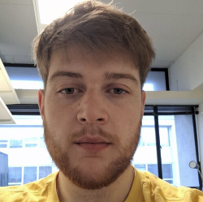
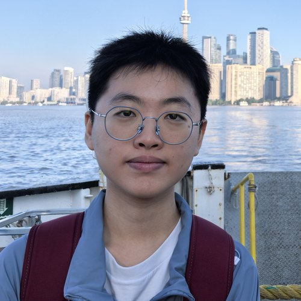
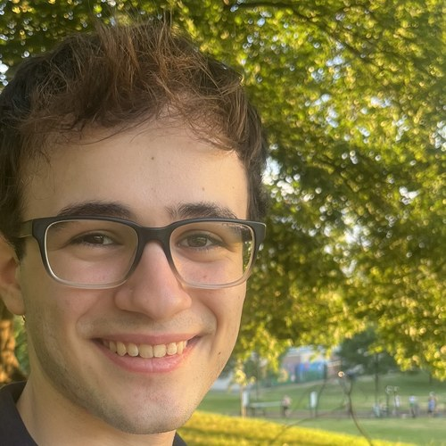

Postdocs

Dr. Qinyue Fei
PhD: 2025, Peking University (Supervisor: Prof. Ran Wang)
Interests: AGNs, Outflow, Kinematics, Dark matter

Dr. Yoshihisa Asada
PhD: 2025, University of Kyoto (Supervisor: Prof. Koji Ohta)
Interests: High-redshift galaxies, Gravitational lensing, Star-formation history

Dr. Jacqueline Antwi-Danso
PhD: 2023, Texas A&M University (Supervisor: Prof. Casey Papovich)
Interests: Massive galaxies, Quiescent galaxies, Chemical abundance, Star-formation history
Dr. Chloe Cheng
PhD: Leiden University (Supervisor: Prof. Mariska Kriek)
Interests: Ultra-deep spectroscopy of elemental abundances in massive quiescent galaxies
Website: chloe-mt-cheng.github.io

Dr. José M. Palencia
PhD: 2025, Universidad de Cantabria (Supervisor: Dr. José M. Diego)
Interests: Strong lensing in galaxy clusters, caustic-crossing magnified stars, dark matter
Graduate students

Lily Han Zhang
Graduated from: Peking University
Interests: Galaxy formation, Galaxies, AGNs
Jingsong Guo
Graduated from: Peking University
Interests: High-redshift AGNs, Galaxy observations
Open for applications! See how to apply.
Undergraduate students

Gavin Farley
Interests: High-redshift galaxies, Metal-poor galaxies, Galaxy evolution

Alexandros Pratsos
Interests: Quasars, Machine learning
Local faculty friends
Colleagues with whom I am collaborating in projects and/or co-mentoring group members.

Roberto Abraham
Website: robertoabraham.com

Joshua S. Speagle
Website: joshspeagle.com

Aviad Levis
Website: aviadlevis.info

Pratika Dayal
Website: pratika-dayal

Adam Muzzin
Website: yorku.ca/professor/muzzin
Alumni
- Ariel Broderick (2026)
Graduate student, University of Toronto. AST1500 project: “Spatially Resolved Characterizations of a Strongly Lensed, Normal Galaxy Down to ~1–10 pc Scales at z = 6”. - Akiyoshi Tsujita (2024–2025)
Visiting graduate student, University of Tokyo. The ALPINE-CRISTAL-JWST Survey: Stellar and Nebular Dust Attenuation of Main-sequence Galaxies at z ~ 4–6, ApJ 997, 319 (2026). - Hollis B. Akins (2021–2022)
Undergraduate summer student, Grinnell College. ALMA Reveals Extended Cool Gas and Hot Ionized Outflows in a Typical Star-forming Galaxy at z = 7.13, ApJ 934, 64 (2022).